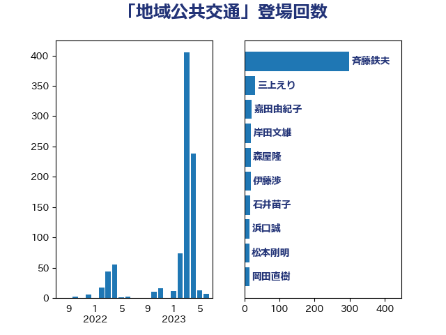

単語「地域公共交通」

| 斉藤鉄夫 | 公明党 | 298 回 |
| 三上えり | 立憲民主党 | 30 回 |
| 嘉田由紀子 | 無所属 | 20 回 |
| 岸田文雄 | 自由民主党 | 19 回 |
| 森屋隆 | 立憲民主党 | 18 回 |
| 伊藤渉 | 公明党 | 18 回 |
| 石井苗子 | 日本維新の会 | 17 回 |
| 浜口誠 | 国民民主党 | 14 回 |
| 松本剛明 | 自由民主党 | 14 回 |
| 岡田直樹 | 自由民主党 | 14 回 |
| 西岡秀子 | 国民民主党 | 13 回 |
| 末次精一 | 立憲民主党 | 13 回 |
| 蓮舫 | 立憲民主党 | 12 回 |
| 一谷勇一郎 | 日本維新の会 | 12 回 |
| 鬼木誠 | 立憲民主党 | 10 回 |
| 斎藤アレックス | 国民民主党 | 10 回 |
| 金子恭之 | 自由民主党 | 9 回 |
| 神津たけし | 立憲民主党 | 9 回 |
| 田村智子 | 日本共産党 | 9 回 |
| 本田太郎 | 自由民主党 | 8 回 |
| 小森卓郎 | 自由民主党 | 8 回 |
| 豊田俊郎 | 自由民主党 | 7 回 |
| 浜野喜史 | 国民民主党 | 7 回 |
| おおつき紅葉 | 立憲民主党 | 7 回 |
| 矢倉克夫 | 公明党 | 6 回 |
| 津島淳 | 自由民主党 | 6 回 |
| 木原稔 | 自由民主党 | 6 回 |
| 庄子賢一 | 公明党 | 6 回 |
| 山本博司 | 公明党 | 6 回 |
| 舟山康江 | 国民民主党 | 5 回 |
| 細田博之 | 自由民主党 | 5 回 |
| 伴野豊 | 立憲民主党 | 5 回 |
| 高橋光男 | 公明党 | 4 回 |
| 赤木正幸 | 日本維新の会 | 4 回 |
| 福島伸享 | 無所属 | 4 回 |
| 河西宏一 | 公明党 | 4 回 |
| 小宮山泰子 | 立憲民主党 | 4 回 |
| 城井崇 | 立憲民主党 | 4 回 |
| 古賀之士 | 立憲民主党 | 4 回 |
| 古川元久 | 国民民主党 | 4 回 |
| 加藤鮎子 | 自由民主党 | 4 回 |
| たがや亮 | れいわ新選組 | 4 回 |
| 高橋千鶴子 | 日本共産党 | 3 回 |
| 赤澤亮正 | 自由民主党 | 3 回 |
| 小沼巧 | 立憲民主党 | 3 回 |
| 塩田博昭 | 公明党 | 3 回 |
| 近藤和也 | 立憲民主党 | 2 回 |
| 西銘恒三郎 | 自由民主党 | 2 回 |
| 石垣のりこ | 立憲民主党 | 2 回 |
| 石原正敬 | 自由民主党 | 2 回 |
| 片山さつき | 自由民主党 | 2 回 |
| 源馬謙太郎 | 立憲民主党 | 2 回 |
| 渡辺博道 | 自由民主党 | 2 回 |
| 横沢高徳 | 立憲民主党 | 2 回 |
| 山口那津男 | 公明党 | 2 回 |
| 山口俊一 | 自由民主党 | 2 回 |
| 尾辻秀久 | 無所属 | 2 回 |
| 尾身朝子 | 自由民主党 | 2 回 |
| 小倉將信 | 自由民主党 | 2 回 |
| 古川康 | 自由民主党 | 2 回 |
| 前川清成 | 日本維新の会 | 2 回 |
| 伊藤孝恵 | 国民民主党 | 2 回 |
| 中川郁子 | 自由民主党 | 2 回 |
| 中川康洋 | 公明党 | 2 回 |
| 高木真理 | 立憲民主党 | 1 回 |
| 高木宏壽 | 自由民主党 | 1 回 |
| 鈴木俊一 | 自由民主党 | 1 回 |
| 里見隆治 | 公明党 | 1 回 |
| 道下大樹 | 立憲民主党 | 1 回 |
| 逢坂誠二 | 立憲民主党 | 1 回 |
| 谷田川元 | 立憲民主党 | 1 回 |
| 西田昭二 | 自由民主党 | 1 回 |
| 福山哲郎 | 立憲民主党 | 1 回 |
| 石川香織 | 立憲民主党 | 1 回 |
| 石井準一 | 自由民主党 | 1 回 |
| 石井浩郎 | 自由民主党 | 1 回 |
| 田畑裕明 | 自由民主党 | 1 回 |
| 熊田裕通 | 自由民主党 | 1 回 |
| 浜田聡 | NHK党 | 1 回 |
| 梅谷守 | 立憲民主党 | 1 回 |
| 枝野幸男 | 立憲民主党 | 1 回 |
| 木村英子 | れいわ新選組 | 1 回 |
| 木村次郎 | 自由民主党 | 1 回 |
| 山添拓 | 日本共産党 | 1 回 |
| 宮崎勝 | 公明党 | 1 回 |
| 吉井章 | 自由民主党 | 1 回 |
| 住吉寛紀 | 日本維新の会 | 1 回 |
| 中山展宏 | 自由民主党 | 1 回 |